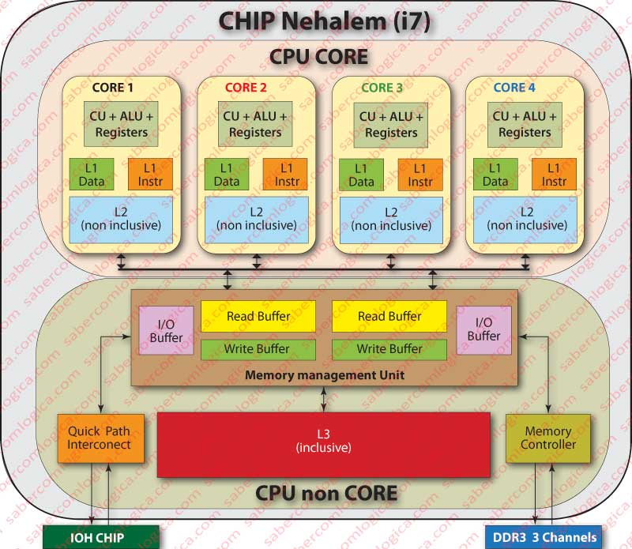

C2-ARCH-02 : Architecture de Von Neumann
Contents
C2-ARCH-02 : Architecture de Von Neumann#
Objectifs pédagogiques#
Connaître les composants de l’architecture de Von Neumann
savoir dessiner l’architecture de Von Neumann
connaître les limites de ce type d’architecture
John Von Neumann et J. Presper Eckert#
John Von Neumann est né en 1903 à Budapest et est mort en 1957. C’est un mathématicien, physicien et logicien qui a apporté une pierre importante à l’édifice de l’informatique, notamment.

Ses principales contributions à l’informatique sont les suivantes :
Architecture d’un ordinateur moderne (dite architecture de Von Neumann)
Automates cellulaires (algorithmique) qui peuvent être décrits comme un modèle de calcul.
Concept dit de la singularitué technologique ou simplement La Singularité qui pose l’hypothèse que l’invention de l’intelligence artificielle déclanchera une croissance technologique sans précédent.
L’architecture principal de l’ENIAC (premier ordinateur électronique programmable du monde) J. Presper Eckert a remis en cause le nom de Von Neumann pour nommer l’architecture puisque ce dernier n’était pas encore en poste lorsque l’EDVAC a été designé.

Architecture Harvard#
A la fin de la guerre, le premier ordinateur électronique, programmable et générique (Harvard Mark 1 développé à l’université de Harvard avec IBM) fonctionnait en séparant physiquement
les instructions du programme
les données du programme
On dit que les deux éléments (l’unité de calcul et la mémoire) possèdent des connections (des bus séparés). Cette architecture est communément appelée *architecture Harvard.

L’architecture de Harvard est toujours utilisée aujourd’hui dans certains types de processeurs spécialisés (processeurs de traitement du signal, certains micro-contrôleurs) mais plus du tout dans les processeurs des ordinateurs modernes.
John Von Neumann a travaillé sur le Harvard Mark 1 : c’est même lui qui a écrit et exécuté l’un des premiers programmes sur cet ordinateur.
Parallèlement au Harvard Mark 1, John Von Neumann travaillait à la Moore School of Electrical Engineering de l’Université de Pennsylvanie là où était installé l’ordinateur militaire ENIAC et son successeur EDVAC. C’est dans ce contexte qu’il y développé une nouvelle architecture dans un rapport resté célèbre First Draft of a Report on the EDVAC [Neumann, 1945] . C’est de ce modèle conceptuel que sont décliné tous les processeurs génériques modernes.
First Draft of a Report on the EDVAC#
Il s’agit du premier rapport technique post-fonctionnement de l’EDVAC (Electronic Discrete Variable Automatic Computer), successeur à tube de l’ENIAC. C’est un document de 101 pages resté incomplet à ce jour.
Dans ce rapport technique, John Von Neumann décrit cinq composants qui sont la base de son modèle :
la CA pour l’unité de calcul arithmétique
la CC pour l’unité de contrôle
la M pour décrire les mémoires :
les I pour les entrées
les O pour les sorties
Chaque composant est relié à l’autre par un BUS de données.
Tout cela mis ensemble conduit au schéma suivant :

d’autre part, il définit clairement que le processeur (construit avec des tubes à vide plutôt que des relais téléphoniques car environ 1000 fois plus rapides) devra fonctionner en binaire et non en décimel.
La CA : unité de calcul arithmétique et logique#
Von Neumann précise qu’elle doit pouvoir :
exécuter les 4 opérations mathématques de base :
+,-,*et/ces opéreations peuvent être étendues à d’autres comme : \(\sqrt{ }\),
signe, \(log_{2}\), \(log_{10}\), \(\sin\), \(\cos\). etc..calculer des fonctions logiques pures (qui ne sont pas du fait de l’unité de contrôle
opérer des instructions plus complexes qui seraients câblées dans l’unité (Von Neumann décrit ici les instructions étendues)
Le CC : unité de contrôle#
Cette unité est ce qu’il appelle le contrôle logique de l’ordinateur. Cette unité doit :
pourvoir discriminer une instruction (ou opération) et les données : cela signifie l’accès à une mémoire que Von Neumann considère qu’elle doit être grande.
La M : la mémoire#
Von Neumann décrit quatre phases successives qui nécessitent une grande quantité de mémoire :
pour une instruction (opéreation) donnée, il peut y avoir une série de résultats intermédiaires ou partiels.
les intructions pour un algorithme complexe (le programme) prennent de la place
certaines fonctions mathématiques sont efficaces lorsqu’elles sont utilisées sous la forme de tables fixes.
pour certaines fonctions mathématiques (équations différentielles), les conditions initiales constituent beaucoup de données
Il précise finalement que ces différentes phases doivent mener à la création d’une mémoire unique.
John Von Neumann considère que les trois unités CA, CC et M correspondent aux neurones associatifs du système nerveux central humain. Il précise encore que pour avoir une analogie complète, il faut des stimulis exterieurs : les neurones afférents, c’est le rôle des entrées et des sorties.correspondent
Les unités d’entrées et de sorties I et O#
Von Neumann construit les communications avec l’extérieur de son modèle avec ce qu’il appelle les entrées (unité I) et les sorties (unité O). Il précise que ces entrées et sorties doivent être réduites à des nombres et des instructions.
Fonctionnement#
Le cycle de calcul de l’architecture de Von Neumann comprend donc plusieurs étapes que l’on peut résumer ici :
récupération l’instruction depuis la mémoire
décodage de l’instruction
récupération des opérandes de l’instruction
exécution de l’instruction
écriture du résultat en mémoire
Ce cycle est parfaitement séquentiel : chaque opération est exécutée dans un ordre linéaire
Caractéristiques et avantages de l’architecture de Von Neumann#
Comparativement à l’architecture Harvard (où le bus des données est séparé du bus des instructions), l’architecture de Von Neumann est :
simple en terme de conception d’un ordinateur physique
simple en terme de programmation d’algorithmes
par contre :
limitations en terme de performance des applications (goulets d’étranglement de la mémoire)
Processeurs modernes#
Aujourd’hui, les ordinateurs (du nano-ordinateur au supercalulateur) implémentent tous le modèle de John Von Neumann dans leur processeur. Certains éléments ont été ajoutés : notamment une hiérarchie dans les mémoires

Ainsi, un processeur moderne (CPU) contient :
une ALU, unité arithmétique et logique (Arithmetic and logic unit) correspondant aux deux unités CA et CC
deux à trois niveaux de mémoires processeurs (les caches) L1, L2, etc.. correspondant à l’unité M
Les bus données, adresses et contrôle, correspondant aux deux unités I et O
Au cours des dernières décennies, l’accent de développement des processeurs l’a été sur leur vitesse. La vitesse d’exécution. Mais un processeur qui exécute rapidement des instructions a besoin d’être nourri d’instructions et de données. Le développement de la vitesse des mémoires n’a pas suivi la même rapidité. C’est l’une des raisons pour lesquelles des mémoires locales, très rapides, proches de l’ALU et du CU ont été ajoutée dans les microprocesseurs : les mémoires cache.
Plus une mémoire est proche de l’ALU et rapide, plus elle est petite est chère.

Architecture d’un processeur moderne#
Voici à quoi ressemble l’architecture d’un processeur actuel (Intel i7 core):

Références#
First Draft of a Report on the EDVAC : [Neumann, 1945]
Simulateur de l’architecture de Von Neumann : [Higginson, 2025]